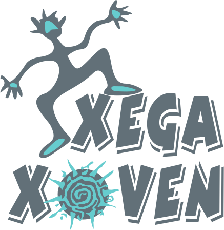
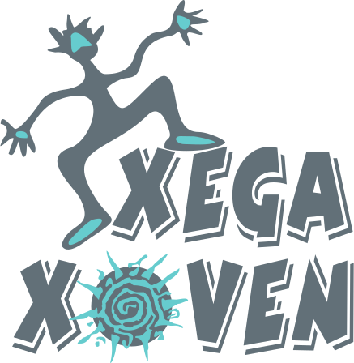

«Igualdad social ¡YA!» fue el lema que englobó todas las reivindicaciones de la manifestación que salió el sábado 27 de junio a las 19:30 horas de la Plaza Mayor (Plaza del Ayuntamiento) de Gijón y recorrió las calles Cabrales, Capua, Plaza San Miguel, y Calle Covadonga hasta llegar al Paseo de Begoña (ver mapa) en el que se leyó el Manifiesto del Orgullo LGTB de Asturias 2015.
Recorrido de la manifestación
Salida: Plaza Mayor 1, Gijón
Llegada: Paseo de Begoña, Gijón
Imágenes de la Manifestación
Ver galería en Facebook (baja calidad) Ver galería en Flickr (alta calidad)
En los medios
Canal 10 / El Comercio, 27 de junio de 2015
Ver vídeo en ELCOMERCIO.es (Flash)
TPA Noticias, 27 de junio de 2015
Ver vídeo en RTPA.es (Flash) Descargar vídeo (Webm) Descargar vídeo (MP4)
- 27/06/2015 - La Nueva España - Día del orgullo gay en Asturias
Gracias a
- Comisiones Obreras Asturias
- Comité Ciudadano Antisida de Asturias
- Consejo de la Juventud de Asturias
- Consejo de la Juventud de Oviedo
- Conseyu de la Mocedá de Llaviana
- Conseyu de Mocedá de Xixón
- EQUO Asturies
- Izquierda Unida Asturias
- Juventud Comunista de Asturias
- Juventudes Socialistas de Asturias
- Juventudes Socialistas de Gijón
- L'Orgullín del Norte
- Bear Gijón Bar
- Café Traslacerca
- La Caleya Sidrería
- Manboleo
- Sidrería-parrilla La 6
- Muyeres en Llucha CSI
- Partido Comunista de Asturias
- Podemos Asturias
- Radio Kras
- Re-percusión Feminista Tam Tam Bruxes
- Red EQUO LGTBI+ Asturies
- Soy Como Soy
- Vivir en Positivo
- Xixón Sí Puede
- Y, por supuesto, a todas las Familias y a quienes acudieron a título individual
Ésta fue una actividad organizada por XEGA y XEGA XOVEN.
 
